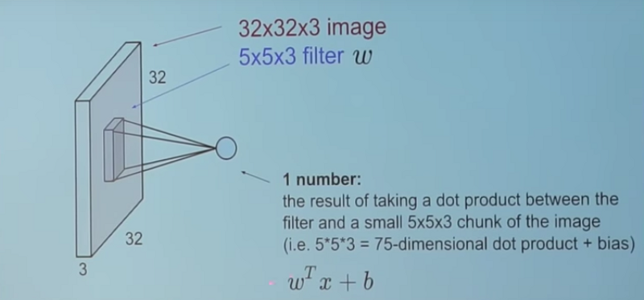

What is convolution Neutral Network?
CNNs, like neural networks, are made up of neurons with learnable weights and biases. Each neuron receives several inputs, takes a weighted sum over them, pass it through an activation function and responds with an output.Convolutional networks perceive images as volumes; i.e. three-dimensional objects, rather than flat canvases to be measured only by width and height. That’s because digital color images have a red-blue-green (RGB) encoding, mixing those three colors to produce the color spectrum humans perceive. A convolutional network ingests such images as three separate strata of color stacked one on top of the other. So a convolutional network receives a normal color image as a rectangular box whose width and height are measured by the number of pixels along those dimensions, and whose depth is three layers deep, one for each letter in RGB. Those depth layers are referred to as channels.
Building Blocks Of CNN
There are three types of layers in a Convolutional Neural Network:1. Convolutional Layers.
2. Pooling Layers.
3. Fully-Connected Layers.
Convolutional Layers
Convolutional layers are comprised of filters and feature maps. We take the 5*5*3 filter and slide it over the complete image and along the way take the dot product between the filter and chunks of the input image.

For every dot product taken, the result is a scalar.

The convolution layer comprises of a set of independent filters (6 in the example shown).
Each filter is independently convolved with the image and we end up with 6 feature maps of shape 28*28*1..
Pooling Layer
Its function is to progressively reduce the spatial size of the representation to reduce the amount of parameters and computation in the network. Pooling layer operates on each feature map independently.The most common approach used in pooling is max pooling.

Fully-Connected Layers.
Fully connected layers are the normal flat feed-forward neural network layer. These layers may have a non-linear activation function or a softmax activation in order to output probabilities of class predictions. Fully connected layers are used at the end of the network after feature extraction and consolidation has been performed by the convolutional and pooling layers. They are used to create final non-linear combinations of features and for making predictions by the network.Understand R-CNN
The goal of R-CNN is to take in an image, and correctly identify where the main objects (via a bounding box) in the image.Inputs: Image
Outputs: Bounding boxes + labels for each object in the image.
But how do we find out where these bounding boxes are? R-CNN does what we might intuitively do as well - propose a bunch of boxes in the image and see if any of them actually correspond to an object.
R-CNN creates these bounding boxes, or region proposals, using a process called Selective Search which you can read about here. At a high level, Selective Search (shown in the image above) looks at the image through windows of different sizes, and for each size tries to group together adjacent pixels by texture, color, or intensity to identify objects.

Once the proposals are created, R-CNN warps the region to a standard square size. On the final layer of the CNN, R-CNN adds a Support Vector Machine (SVM) that simply classifies whether this is an object, and if so what object.
Fast R-CNN
Fast R_CNN is Similar to R-CNN, it used Selective Search to generate object proposals, but instead of extracting all of them independently and using SVM classifiers, it applied the CNN on the complete image and then used both Region of Interest (RoI) Pooling on the feature map with a final feed forward network for classification and regression. Not only was this approach faster, but having the RoI Pooling layer and the fully connected layers allowed the model to be end-to-end differentiable and easier to train. The biggest downside was that the model still relied on Selective Search (or any other region proposal algorithm), which became the bottleneck when using it for inference.Region of Interest (RoI) Pooling
In the forward pass of the CNN for each image, a lot of proposed regions for the image invariably overlapped causing us to run the same CNN computation again and again (~2000 times!). So in fast R-CNN just once per image andshare that computation across the ~2000 proposals. RoIPool shares the forward pass of a CNN for an image across its subregions. The CNN features for each region are obtained by selecting a corresponding region from the CNN’s feature map. Then, the features in each region are pooled (usually using max pooling). So all it takes us is one pass of the original image as opposed to ~2000!Combine All Models into One Network
Fast R-CNN is to jointly train the CNN, classifier, and bounding box regressor in a single model. Where earlier we had different models to extract image features (CNN), classify (SVM), and tighten bounding boxes (regressor), Fast R-CNN instead used a single network to compute all three.You can see how this was done in the image above. Fast R-CNN replaced the SVM classifier with a softmax layer on top of the CNN to output a classification. It also added a linear regression layer parallel to the softmax layer to output bounding box coordinates. In this way, all the outputs needed came from one single network! Here are the inputs and outputs to this overall model:
Inputs: Images with region proposals.
Outputs: Object classifications of each region along with tighter bounding boxes.
Faster R-CNN
Faster R-CNN has two networks: region proposal network (RPN) for generating region proposals and a network using these proposals to detect objects. The main different here with Fast R-CNN is that the later uses selective search to generate region proposals. The time cost of generating region proposals is much smaller in RPN than selective search, when RPN shares the most computation with the object detection network. Briefly, RPN ranks region boxes (called anchors) and proposes the ones most likely containing objects.Working of Faster R-CNN

Anchor Box
Anchors play an important role in Faster R-CNN. An anchor is a box. In the default configuration of Faster R-CNN, there are 9 anchors at a position of an image.Region Proposal Network
The output of a region proposal network (RPN) is a bunch of boxes/proposals that will be examined by a classifier and regressor to eventually check the occurrence of objects. To be more precise, RPN predicts the possibility of an anchor being background or foreground, and refine the anchor.ROI Pooling
After RPN, we get proposed regions with different sizes. Different sized regions means different sized CNN feature maps. It’s not easy to make an efficient structure to work on features with different sizes. Region of Interest Pooling can simplify the problem by reducing the feature maps into the same size. Unlike Max-Pooling which has a fix size, ROI Pooling splits the input feature map into a fixed number (let’s say k) of roughly equal regions, and then apply Max-Pooling on every region. Therefore the output of ROI Pooling is always k regardless the size of input. Here is a good explanation about ROI Pooling.You Only Look Once (YOLO)
You Only Look Once: Unified, Real-Time Object Detection(YOLO) paper published by Joseph Redmon (with Girshick appearing as one of the co-authors). YOLO proposed a simple convolutional neural network approach which has both great results and high speed, allowing for the first time real time object detection.What is YOLO?
YOLO stands for You Only Look Once. It’s an object detector that uses features learned by a deep convolutional neural network to detect an object. Before we get out hands dirty with code, we must understand how YOLO works. There are currently three versions of it- YOLO v1 , YOLO v2 and YOLO v3. YOLOv1 was first introduced in 2015. It was an important work as the model could process images in real-time at 45 frames per second- which was amazing compared to other object detection methods at that time. YOLOv1 performed a lot faster compared to the other methods. But, it’s detections suffered by ~10 mAP compared to Faster R-CNN VGG-16. This was one of the motive behind the 2nd version of YOLO, which was introduced in late 2016. YOLOv2 outperforms all the other methods in both speed and detection. At 67 FPS, YOLOv2 gets 76.8 mAP.
Why is it better than YOLOv1 ?
YOLO suffers from a variety of shortcomings relative to state-of-the-art detection systems. Error analysis of YOLO compared to Fast R-CNN shows that YOLO makes a significant number of localization errors. Furthermore, YOLO has relatively low recall compared to region proposal-based methods. Thus we focus mainly on improving recall and localization while maintaining classification accuracy. Computer vision generally trends towards larger, deeper networks . Better performance often hinges on training larger networks or ensembling multiple models together. However, with YOLOv2 we want a more accurate detector that is still fast. Instead of scaling up our network, we simplify the network and then make the representation easier to learn. We pool a variety of ideas from past work with our own novel concepts to improve YOLO’s performance.
Batch normalization
Add batch normalization in convolution layers. This removes the need for dropouts and pushes mAP up 2%.
High-resolution classifier
The YOLO training composes of 2 phases. First, we train a classifier network like VGG16. Then we replace the fully connected layers with a convolution layer and retrain it end-to-end for the object detection. YOLO trains the classifier with 224 × 224 pictures followed by 448 × 448 pictures for the object detection. YOLOv2 starts with 224 × 224 pictures for the classifier training but then retune the classifier again with 448 × 448 pictures using much fewer epochs. This makes the detector training easier and moves mAP up by 4%. Convolutional with Anchor Boxes As indicated in the YOLO paper, the early training is susceptible to unstable gradients. Initially, YOHO makes arbitrary guesses on the boundary boxes. These guesses may work well for some objects but badly for others resulting in steep gradient changes. In early training, predictions are fighting with each other on what shapes to specialize on.
Convolutional with Anchor Boxes
As indicated in the YOLO paper, the early training is susceptible to unstable gradients. Initially, YOHO makes arbitrary guesses on the boundary boxes. These guesses may work well for some objects but badly for others resulting in steep gradient changes. In early training, predictions are fighting with each other on what shapes to specialize on.
Dimension Clusters
In many problem domains, the boundary boxes have strong patterns. For example, in the autonomous driving, the 2 most common boundary boxes will be cars and pedestrians at different distances. To identify the top-K boundary boxes that have the best coverage for the training data, we run K-means clustering on the training data to locate the centroids of the top-K clusters.